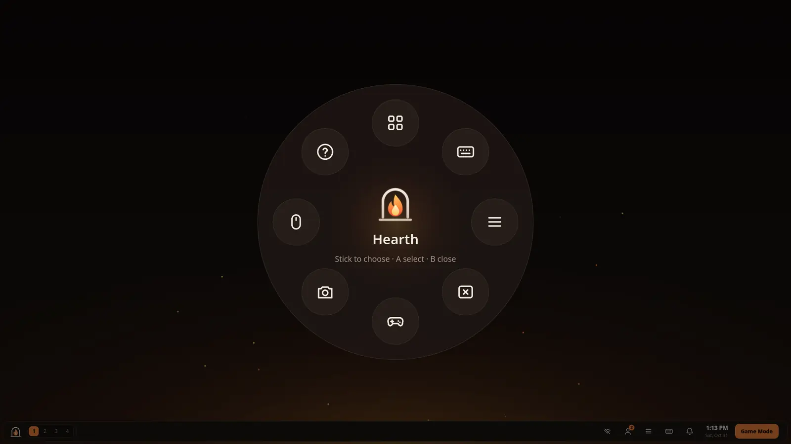
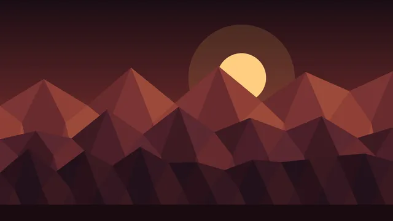
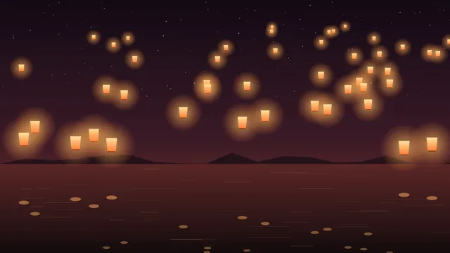
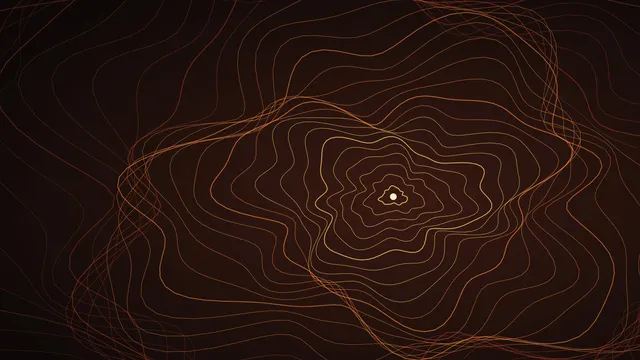

Steam Game Mode on the couch. Mantel on the desk.
Hearth OS is a free, Debian-based OS for gaming PCs and handhelds. It plays in Steam Game Mode, the way SteamOS does, and Mantel, Hearth's own desktop, is one press away.
The Game Mode is Steam's Game Mode
Hearth OS starts into Valve's Steam client in gamescope, the same full-screen gamepad screens SteamOS uses: Steam's library, store, Quick Access menu and overlay. The Hearth plugin for Decky Loader brings Hearth's tools into it.
- Starts by itself. Turn on the PC or handheld and you're in Steam Game Mode, ready for the controller.
- Mantel one press away. Switch to the desktop from Steam's power menu, and back again.
- Hearth inside Steam. Hearth's quick settings, power modes, updates and your non-Steam games, through Decky.
- Updates from Steam's own settings. Check for updates runs Hearth's update, and the device never restarts by itself.
In 0.6.63 Steam Game Mode is already there as an option to switch to (Experimental). From the next update it is the Game Mode. How Steam Game Mode works
- 1
You turn it on
The boot menu starts the newest version, and keeps the one before it.
- 2
Steam Game Mode opens
Your games, from Steam and from Hearth Sync, in one library.
- !
If Steam Game Mode can't start
The PC opens Mantel instead, with a message saying what happened and a button to try again.
Hearth's own Game Mode is archived
It's no longer part of Hearth OS from the next update. Its code stays in the repository, and the Ember app on Windows keeps its own Game Mode.
Hearth Sync
A small Decky plugin that puts the games you have outside Steam into Steam's library, with covers, and keeps them in sync.
- Epic and GOG games through Heroic Games Launcher, Battle.net, Xbox cloud gaming, emulators, recomps, and games you add by hand.
- A collection for each store, so they're easy to find with the controller.
- Install or remove a game and Steam's library follows. Nothing else in your library is touched.
- Epic Gamesthrough Heroic Games LauncherEpic
- GOGthrough Heroic Games LauncherGOG
- Battle.netBlizzard gamesBattle.net
- Xbox cloud gamingstreamed gamesXbox Cloud
- Emulators and recompsconsole games you own, played on PCEmulators, Recomps
- Added by handany game or app you pickMy games
Mantel, Hearth's own desktop
A full Linux desktop you can use with a controller or a mouse and keyboard: the Hearth menu on the Guide button, an on-screen keyboard on Guide + X, Hearth Link and Hearth Storage built in.

A Steam-style theme
Deep blue-slate panels, cool grey text and a bright accent, so the desktop looks at home next to Steam Game Mode.
New wallpapers
New static and animated wallpapers. Today's set stays available:



Make it yours
Pick an accent colour, dark or light, and a theme.
Try an accent on this page:
Updates that can always go back
Each update replaces the system in one piece and keeps the version before it startable. Three ways back, from the easiest:
The boot menu
The previous version stays in the boot menu. Pick it there, or go back from Settings.
Automatic fallback
If Hearth fails to start twice in a row, the previous version starts by itself and stays the default.
Hearth Recovery
Hold Volume Down while starting, or boot the Recovery USB: reinstall keeping your files, copy files off, send logs.
New in Hearth OS 1.2
A free update for everyone on 1.0 or 1.1: Settings › Updates.
Every game plays instantly
Hearth Music finds a song for your whole library once, in the background, so each game's theme starts the moment you look at it.
Deezer previews
When Apple Music has no good match, Deezer's official 30-second previews fill in, streamed and never stored.
Choose music…
Search your soundtracks, Apple Music and Deezer for any game and keep your pick. Your choice always wins.
Plugin updates, no system update
Hearth Sync, Hearth Link and Hearth Music update on their own in Settings › Updates, new Hearth plugins arrive the same way when you choose, and the copy before comes back if a new one doesn't load.
Recently, in Hearth OS 1.1
Still new if you're coming from 1.0.
Install from a USB stick
A Steam-style installer that works with a controller, touch, mouse or keyboard: pick a drive, your Wi-Fi, your name and the time, and it's done.
Your boot animation
Pick one of four startup animations and a boot splash, with a matching boot menu, in Settings › Boot & startup.
Hearth Music
Your games' own soundtracks play while you browse in Steam Game Mode, with Apple Music previews streamed for games without one.
Hearth Link in Steam
A Steam Game Mode panel that keeps your Decky plugins, Hearth settings and game saves in step across your Hearth devices.
Mods: Play modded
Start a modded game straight away, or add it to Steam, through Mod Organizer 2 or Hearth's own.
New keyboard looks
Fresh on-screen keyboard styles, light and dark, chosen in Settings › Keyboard.
Handheld settings
Power modes, fan and controller options for handhelds like the ROG Ally, built into Settings.
Every app matches
Hearth's apps follow your desktop theme and colours, and the controller works in each of them.
Settings that stay put
Every setting is saved safely and remembered, and never changes by itself.
Your Steam games, found
Games Steam doesn't see on your drives are brought into its library.
Screen modes that work
Game Mode only uses resolutions and refresh rates your screen really has, and says so if your choice couldn't be used.
Steadier game sound
Fixes for choppy audio in busy games.
Still in Hearth OS
The parts of Hearth that work in Steam Game Mode and Mantel alike.
Hearth Link
Pair your Hearth devices: copy games between them, update every device with one download, and share a device's local AI with the others.
Hearth Storage
A spare Hearth PC becomes a home server: shared folders, a game archive, save and screenshot backups, media streaming and wake over the network.
Hearth Input
Controller layouts with action sets, layers, chords, flick stick and gyro, and the on-screen keyboard on Guide + X.
Mods
Hearth Mod Organizer keeps Mod Organizer 2's layout and files, and Wabbajack lists install with their downloads handled. Experimental.
Hearth Recomps
Native PC ports of console games, installed and updated from their releases, with your own copy of the game checked and set up.
Writable Debian
Install with apt or open a .deb file and it stays across restarts and updates. Lock the system again whenever you like in Settings.
Hearth's Game Mode
Replaced by Steam Game Mode in Hearth OS 1.0. The code is kept.
The Anatase edition
The Fedora edition gets no more updates. Installs keep working on their last version; install Hearth OS on Debian to keep updating.
Multi-seat and couch co-op
Paused for now while Hearth moves to Steam Game Mode.
Get Hearth OS
Write the ISO to a USB stick of 16 GB or more (with Hearth Disks, Ventoy, Rufus or balenaEtcher), start your PC or handheld from it, and follow the screens. Installing needs a drive of 64 GB or more.
Offline USB
Hearth OS on Debian on the stick, so it installs without internet. It updates itself to the newest version after installing.
Download about 4.3 GB SHA-256 checksumRecovery USB
Keep one in a drawer. It starts the previous version, reinstalls keeping your files, or copies them off.
Download about 5 GB SHA-256 checksumNvidia graphics and other ways to install are in Installing. Hearth OS is in beta: keep a backup of anything important.
On Windows 11? Try Ember
Ember is Hearth for Windows: Hearth's Game Mode library and the Mantel desktop as a Windows shell, in place of Explorer or on top of it. Switch back to Explorer any time. Beta
In PowerShell:
irm https://raw.githubusercontent.com/Dragongamer9/hearth-os/main/tools/install-nimbus.ps1 | iexSupport Hearth OS
Questions
What hardware does it need?
Steam Deck, ROG Ally, Legion Go and most x86-64 desktops and laptops with AMD, Intel or Nvidia (GTX 16 / RTX 20 and newer) graphics. For installing, a USB stick of 16 GB or more and a drive of 64 GB or more.
Do I need a Steam account?
Steam Game Mode is Valve's Steam client, so you sign in to Steam there. Mantel, Hearth's desktop, works without one.
Can I go back to the last version?
Yes. Updates keep the previous system in the boot menu; pick it, or use Settings › System › Updates. A version that fails to start twice in a row goes back by itself, and holding Volume Down while it starts opens Hearth Recovery. If nothing starts, the Recovery USB can start the previous version.
I'm on Anatase. What now?
Anatase keeps working on its last version, but gets no more updates. To keep getting updates, install Hearth OS on Debian; games on a separate drive stay.
Is it really free?
Yes. Hearth OS is free and open source under the GPL-3.0. Games you buy come from the stores as usual.
Something broke. How do I report it?
Send logs from Settings › System › Help & logs or with hearth-send-logs, and tell us what happened.